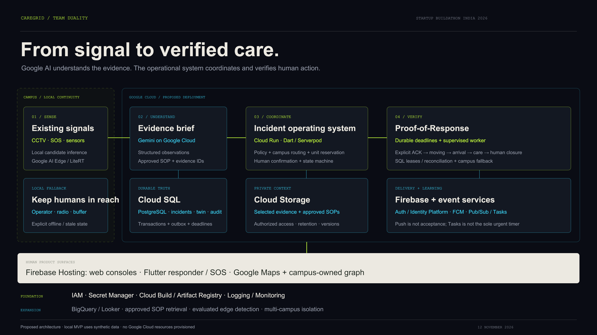
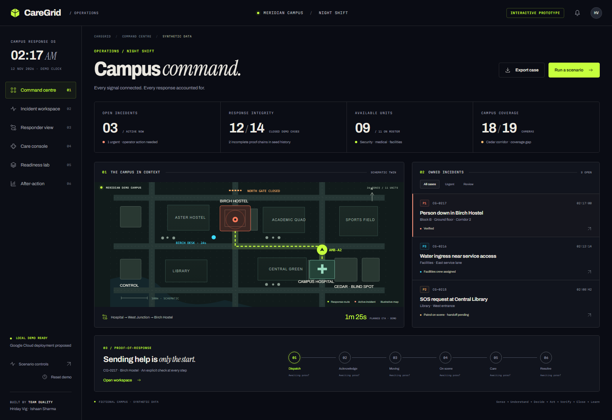
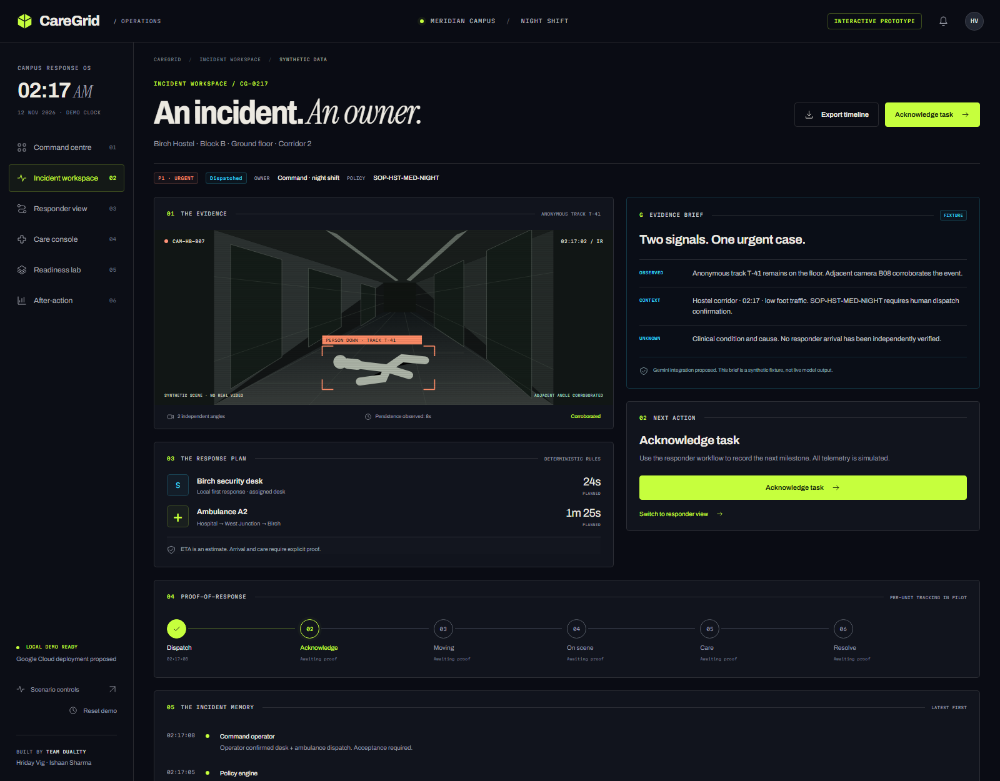
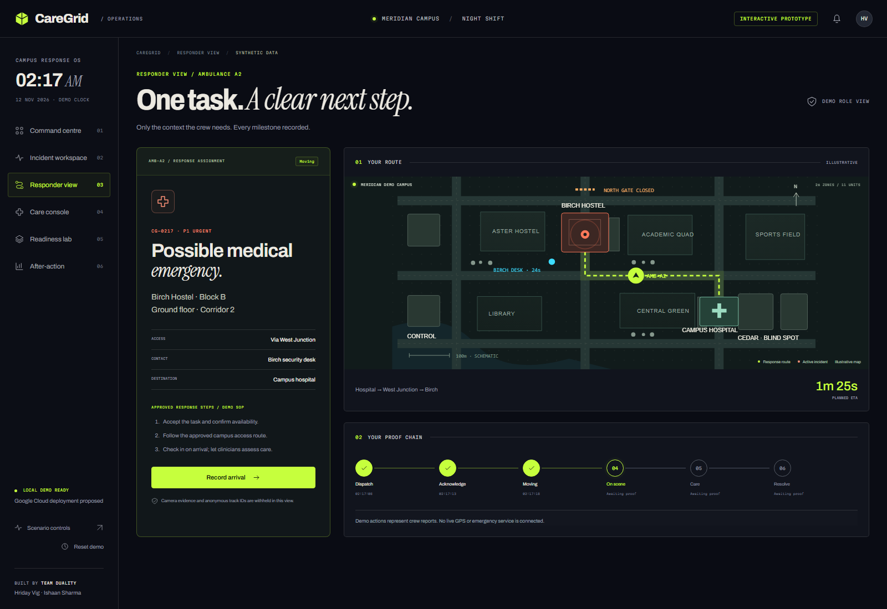
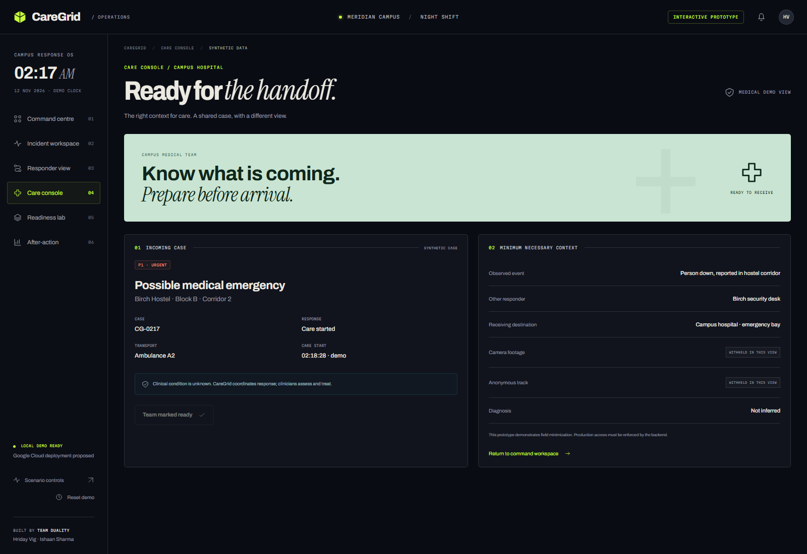
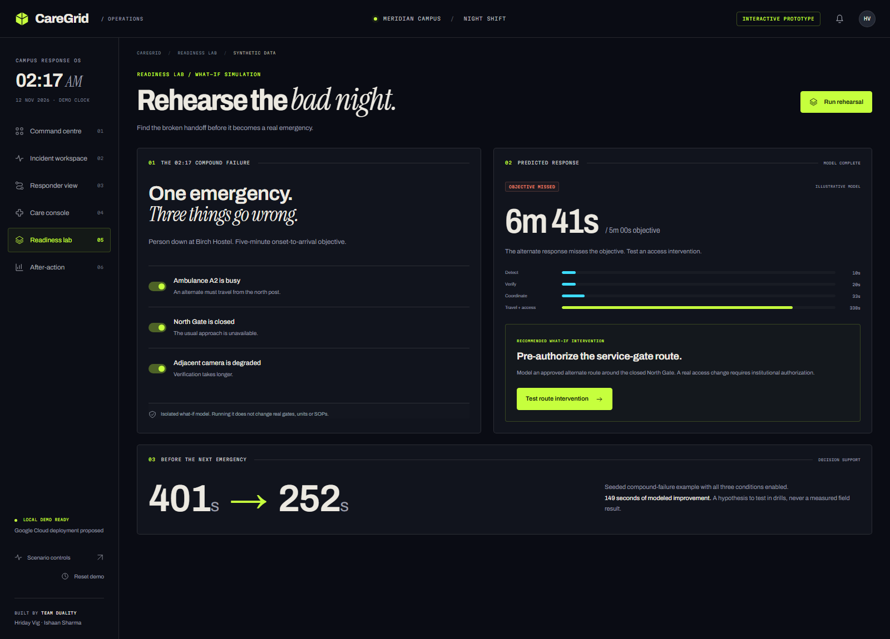
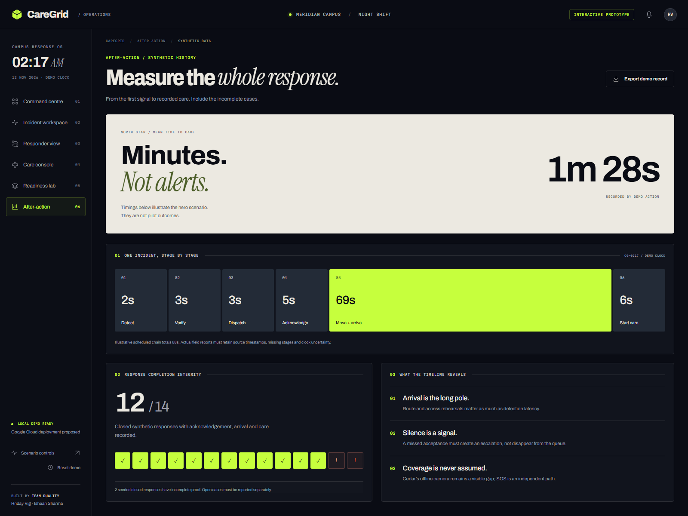
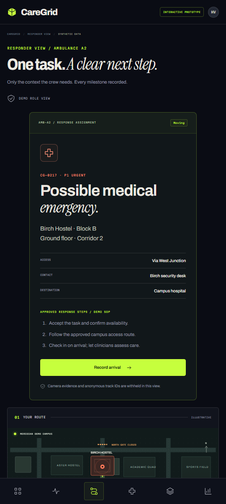
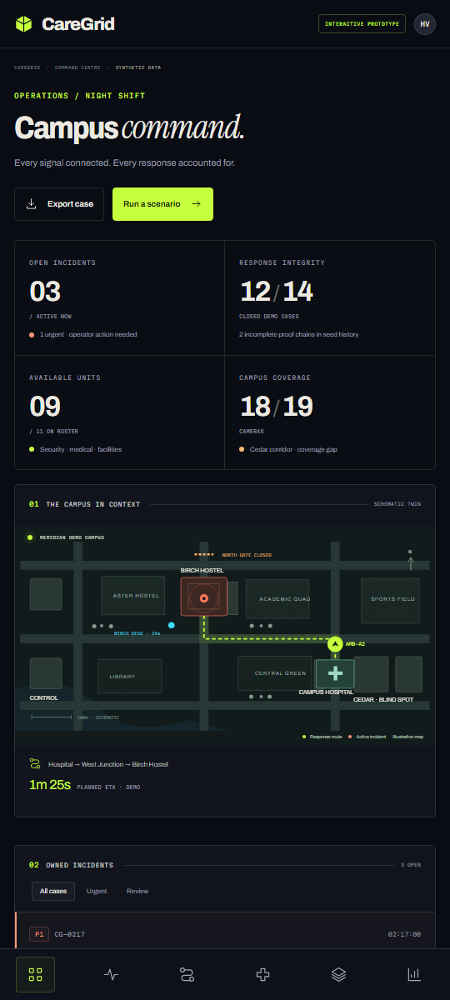

The Google Cloud architecture
Gemini understanding, Cloud Run coordination, Cloud SQL state, human response verification and local continuity.
Download PNG ↗Editable SVG ↗Architecture and product visuals for the pitch deck. Every product screen uses synthetic data. Google Cloud integrations are proposed, and no campus deployment or measured impact is claimed.

Gemini understanding, Cloud Run coordination, Cloud SQL state, human response verification and local continuity.
Download PNG ↗Editable SVG ↗
Prioritized owned incidents, a schematic twin and the full proof chain. Fictional campus.
Download PNG ↗
Original synthetic corridor illustration and fixture brief. No real CCTV or Gemini call.
Download PNG ↗
Minimal case context, approved route and explicit response milestones. Simulated location.
Download PNG ↗
Medical preparation and a role-minimized view. Demo presentation, not an authorization test.
Download PNG ↗
Busy ambulance, closed gate and degraded camera. Predicted timings, not measured field results.
Download PNG ↗
Illustrative stage latencies and seeded proof-completion history.
Download PNG ↗
540px narrow browser rendering. Synthetic task and explicit demo arrival action.
Download PNG ↗